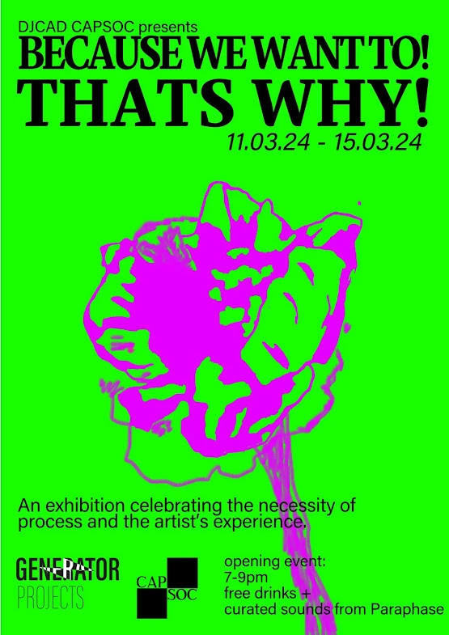
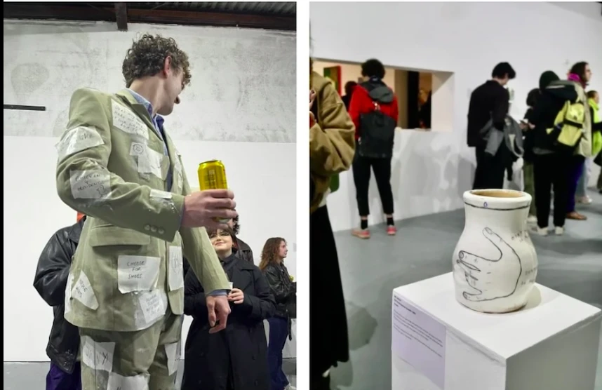
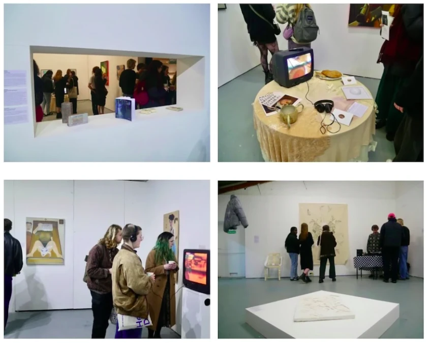
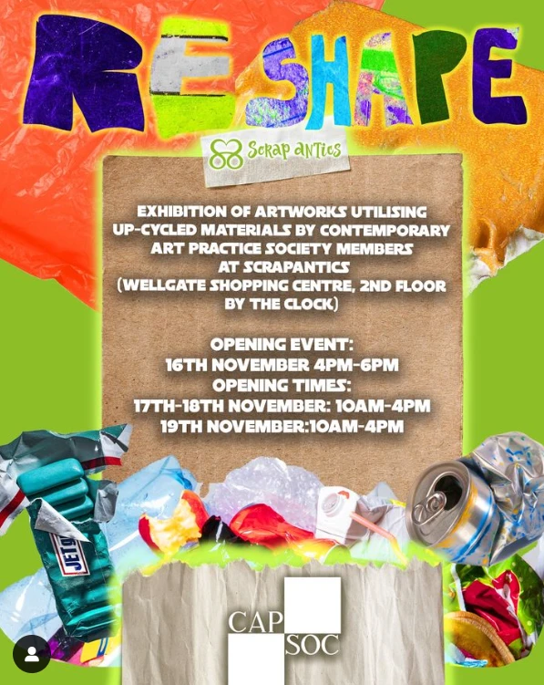
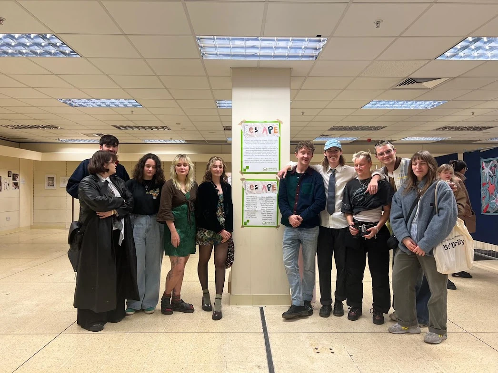
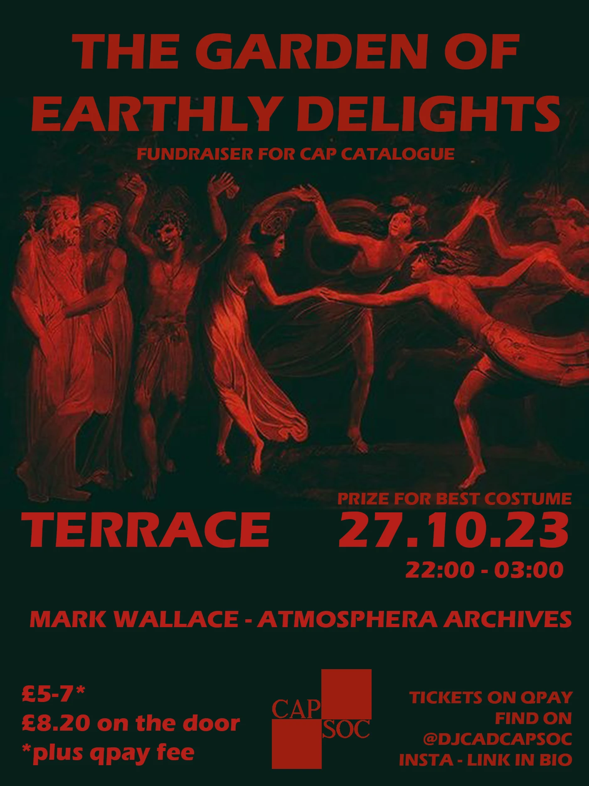
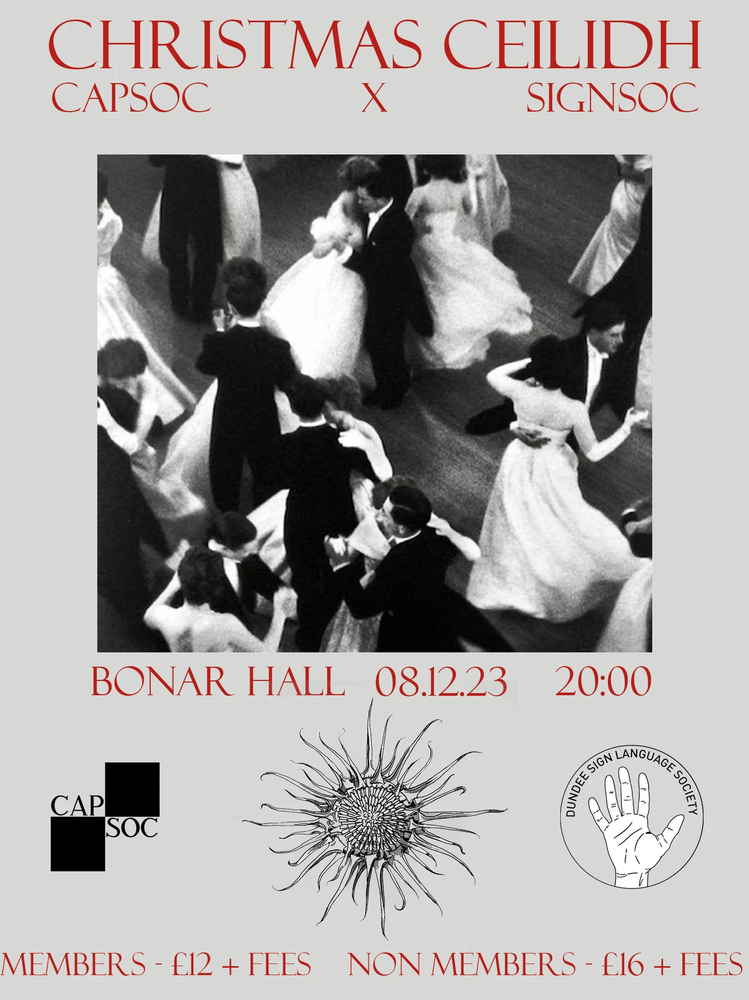
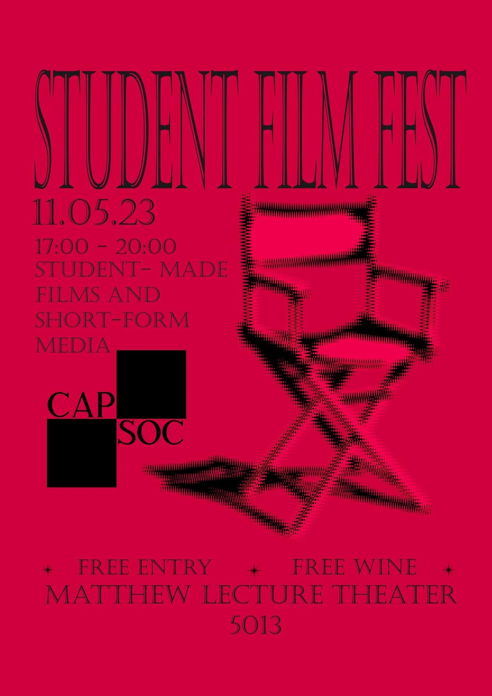
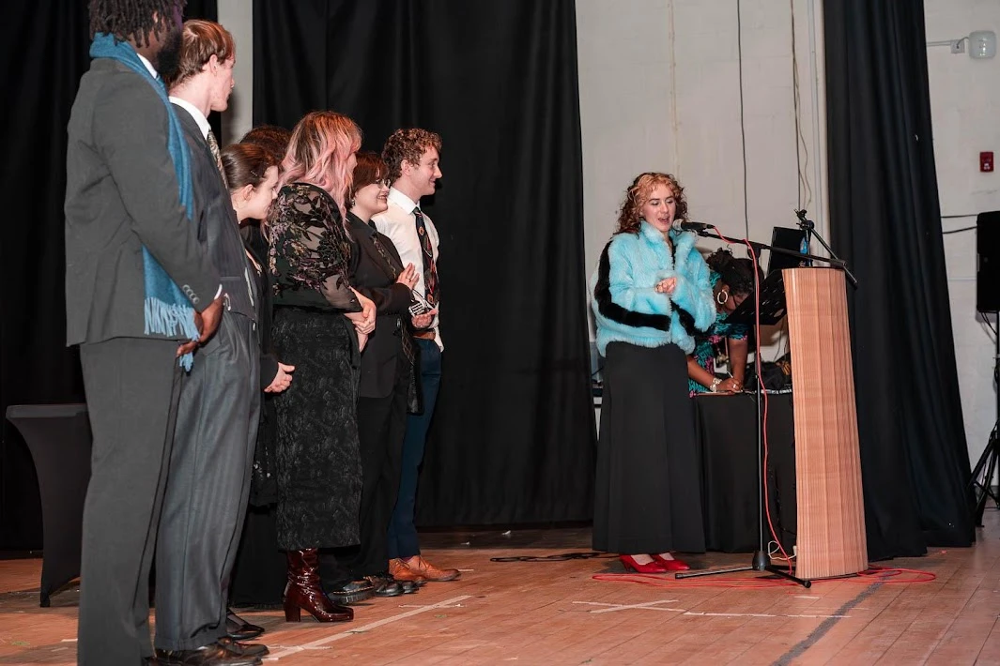

Contemporary Art Practice Society
Events, Fundraisers, and exhibitions organised, curated, and promoted by myself. As the PR and Social Media team leader of CAPSoc as well as founding member, I worked to curate our social media presence through logo design, graphic design, and consistent social media marketing.
2022 - 2024
Because We Want To! That's Why!
Generator Projects, Dundee



RESHAPE
Scrapantics, Wellgate Centre, Dundee


Other CAPSoc Events
Organised and Promoted through Graphic Design and Social Media Campaigns



DUSA Society Awards 2024
'Society of the Year' winners
'Best Academic Society' winners
